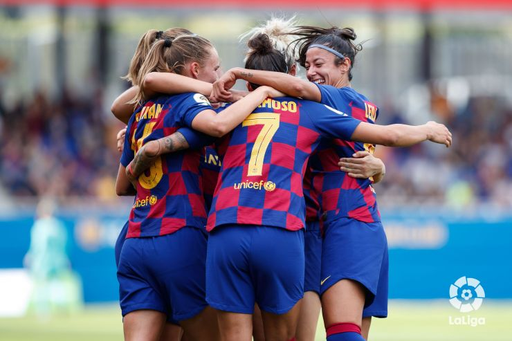
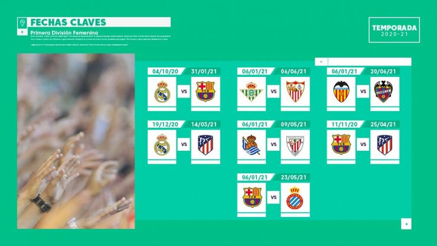

ÚLTIMAS NOTICIAS
Las claves de la primera vuelta de la Liga Iberdrola
Catorce jornadas disputadas, más de 300 goles, grandes fichajes nacionales e internacionales... La primera vuelta de la Primera Iberdrola ha llegado a su fin y hemos podido disfrutar de un primer tramo de curso apasionante, lleno de grandes momentos y, sobre todo, con mucho fútbol.
Las fechas clave de la Primera División Femenina 2020/21
La máxima competición del fútbol femenino español está de vuelta y estos son los partidos que no te puedes perder. ¡Entra y descubre todo lo que necesitas saber de la Primera División Femenina 2020/21!
